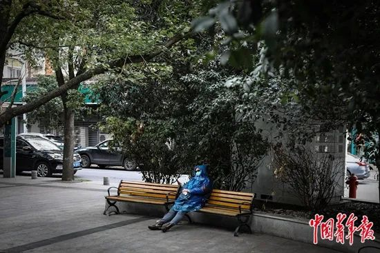

武汉新冠患者病死率逐渐下降到3%，关键原因是什么 | 专访瑞金医院副院长陈尔真
原文链接 备份链接 新冠肺炎重症患者死亡率，比SARS低比普通流感高。 记者 | 黄 祺 3月6日下午，武汉市第三医院光谷院区19楼8病区迎来“关门大吉”。 随着上海市第一康复医院高天霖医生一声“关灯！”，11位医护人员身后一片漆黑，高医 …

2月19日中午，武汉市百步亭社区，一位在午休的“下沉”干部。中青报·中青网记者 赵迪/摄
作者 | 中青报·中青网记者 马宇平
编辑 | 从玉华
1月23日，武汉宣布封城后3小时，郝南在社交媒体上发布了nCoV Relief（后改名“NCP生命支援”）志愿者招募书，当天有近2000人报名。
黄快快成了第一批志愿者，她曾在武汉读大学。她想到的是平日搭乘的武汉公交车快到“飞”起，人们“过早”，端着一碗热干面边走边吃。“武汉人的精气神儿特别足，这一次感觉武汉突然虚弱了。”
她所在的组里，超过一半是大学生。打出第一个电话时，有志愿者紧张得连自我介绍都没说利索。手机通话记录显示，2月5日这天，一名志愿者打了100多个电话联系床位，都没有得到结果，后来她看到手机就反胃。
最初，她们和大部分患者家属一样，对入院流程办理并不清楚，“手忙脚乱，谁的电话都打”。社区、街道、医院、区防疫指挥部、市长热线、地方卫健委，她们把电话号码按了个遍。
赵粒接手的第一位求助者是个姑娘，她迫切需要为外公外婆找两张床位。外公核酸检测为阳性，外婆也出现了相应的症状，但是核酸检测为阴性。
这是前期典型的求助者画像：老年人、确诊或核酸为阴性的危重症、没有床位。
有人分享经验，要先联系到有床位的医院，再找社区开转诊单。她焦头烂额忙完第一步，却被社区通知“根本不知道转诊单是个什么样的东西”。
在志愿者看来，“经验”不仅在武汉的不同行政区、甚至不同街道间都无法通行，并且会很快过时，因为“武汉的情况也是一天一个样”。志愿者群里共享的政策、医院床位和接收情况的信息一直在更新，并标明“某天某时”。
“我们的工作就是到处联系，我们可能在补一个信息的缺口。”黄快快说，很多患者当时处于比较焦虑和慌乱的状态，既没有精力逐个医院地去找床位，也无暇梳理信息。有患者根本不知道入院流程。
她们把媒体、其他志愿服务团体等公布的救助渠道一并发给患者，“都试试，不知道到底最后哪个能起到作用。”
让志愿者刘布感到困难的是本身患有其他疾病的疑似或确诊患者，“定点医院只收治新冠肺炎患者，其他医院不收治新冠肺炎疑似或确诊的患者，所以就比较麻烦”。
赵粒能感觉到患者家属也在一直催社区。电话接通，她刚报出患者名字，工作人员告诉她已经将情况上报。她紧张地问了一句，患者在家里隔离，社区能提供什么防护呢？
“什么都没有。”电话那头的社区工作者说自己仅戴一个普通口罩，防疫物资只有口罩和84消毒液。没有防护服，有社区工作者穿着厨房的围裙站在了防疫一线。
社区工作人员谢飞和同事们的工作压力也大到了极点，每天填各种表上报给不同部门、照顾特殊群体就医、联系物业安排消毒杀菌，保证普通居民的生活物资与供应。四类人群没有完成“应收尽收”之前，居民指责他们不作为。
“工作初期，因为大家都没有经验，确实像打乱战，都在努力，只是不知道怎样才更有效。”谢飞回忆道，“那时候的现实情况就是确诊的还没有收治，已经确诊的病人，上报两天了，还在家里。我不知道该怎么办。”后来，他们上门给不愿去隔离的密切接触人员做工作，对方表示，自行去不去；酒店自带被子不去；只给矿泉水没有热水的不去，反正就是不去。
“有时患者会把社区工作者放在他的敌对面，因为他那个时候需要一个情绪的支撑点，他下意识地认为，我没有被安排入院，是社区的问题，社区没有给我上报等。”黄快快说。
“有的时候确实会觉得好累，看不到头。为什么就没有床位？我那时候恨不得去造床了！”她担心很多人可能等不到床位，或者入院就危重症了。
“比如前一天求助的人今天过来跟我说，我已经住上院了，我就会觉得，他们在变好，就觉得挺开心的。”刘布说。
赵粒做志愿者第三天晚上，收到求助者信息：“我外婆快不行了。”
“我当时感觉整个人被那种巨大的愧疚感吞噬了，感觉好乱，怎么办，打120去急诊还是继续找床位住院？”赵粒捧着手机，给社区打电话，再给街道打。患者提出想住离家更近的武昌医院，她就给医院反复打，问能不能去住院，能不能有病床，不要只是急诊拉回来。
打完一圈以后，她给自己做一会儿心理建设，然后继续打电话催一遍。凌晨3点，老人被医院收治。她松了一口气，尽管不确定自己在推动事件的解决中到底发挥了多大的作用。
也有人没那么幸运。有时找了几天都没有床位，求助者对一名志愿者说“想放弃了。”她回复对方，我会继续想办法的。然后再去搜集信息，打电话，并给他们汇报进展。刘布也遇到过，求助者的需求从两张床位变成一张——一位已经去世了。
当志愿者多日后，她有了种很复杂的心情，“你想发一个很轻松的朋友圈，但是你想到还有一群人就是那么惨，我就突然感觉这种快乐就很不应该”。
督导每天对志愿者进行技术指导和情绪支持。“你要相信你的生活跟电话那头的生活，其实是两个生活，你是在听别人的故事，”陆小芸说，“督导一直让我们划清专业跟同理心的边界。”
黄快快和志愿者们明显感受到变化是在方舱医院建成后，开始“应收尽收，应治尽治”，群里的求助信息少了很多。
一名志愿者每天都关注与疫情相关的新闻，“像从谷堆里寻找一根救命的稻草”。她意识到，白纸黑字的文件牵扯的是鲜活的生命，是无数家庭的希望。2月12日，湖北省卫健委首次公布新冠肺炎临床诊断病例具体数字。根据《新冠肺炎诊疗方案（试行第5版）》，湖北省内可以以CT影像作为确诊依据时，她立即拨通了那些CT影像显示感染、“排队做核酸”求助者电话。
形势慢慢变好。2月下旬开始，志愿者也结束了24小时待命的状态，群里实行值班制度，每4小时进行一次轮班。
“应收尽收”之后，求助的患者多是非新冠肺炎的患者，他们可能需要透析、化疗或是因为其他疾病需要住院，也有新的生命即将来到这座城市。也有人提出买药方面的需求。
这两天，出院的新冠肺炎患者开始担心去复查的事，比如万一没完全康复会不会再被隔离到医院治疗。
赵粒习惯和对方聊日常生活，她帮助过的一位阿姨也给了她做志愿者的动力，有互相治愈的那种感觉。“阿姨思考很多问题，比如新冠肺炎患者出院后再去检查应注意什么，如何做好检测前的隔离等”。这也让她意识到，要像对待普通人一样对待她们，不要小心翼翼“怕把对方碰碎了”。
“成为志愿者之前，是愤怒又无力那种感觉。”赵粒说，后来加入了以后就变成了很微观层面上的关注。“很多事情可能没有答案，但是还是要去做，后面就会发生一点变化。”
如今，一天比一天好了。有阿姨表示，疫情结束之后，她要去广场上跳舞，舞伴都等她很久了。
陆小芸说，自己之前对武汉的全部印象就是——“武汉是一座很热的城市”。这次她看到了这个城市痛得最深的地方。“大家都很渺小，但是我们一人抱一下，也可以抱住武汉的。”
（应受访对象要求，黄快快、谢飞、刘布、赵粒、陆小芸均为化名）
中国青年报·中国青年网出品
微信编辑 | 陈轶男

觉得好看请点这里
原文链接 备份链接 新冠肺炎重症患者死亡率，比SARS低比普通流感高。 记者 | 黄 祺 3月6日下午，武汉市第三医院光谷院区19楼8病区迎来“关门大吉”。 随着上海市第一康复医院高天霖医生一声“关灯！”，11位医护人员身后一片漆黑，高医 …
原文链接 备份链接 新冠肺炎患者因何而死？死亡特征是什么？ 2 月 26 日，预印本期刊 MedRxiv 发表了来自武汉大学人民医院的论文《25 例新冠病毒肺炎死亡患者的临床分析：中国武汉单中心的回顾性研究》试图回答此问题，论文通讯作者系 …
原文链接 备份链接 “很多人去世。”袁鸣说，“但他们和我们都尽了最大的努力。” 2月15日上午，刚刚经历了一夜冬日雷雨和大风的武汉大雪纷飞，袁鸣早早进入病房查房。依次穿上蓝色隔离服、白色防护服，戴上手术帽、面屏和护目镜，套上手套和脚 …
原文链接 备份链接 *************▲*************2月19日，武昌医院的发热门诊就诊的人数明显减少。（南方周末记者 王伟凯/图） 全文共5257字，阅读大约需要10分钟。 因为诊断门槛过高，过去二十多天里，武汉 …
原文链接 备份链接 “医院外面，一位女士咳嗽到不行，又住不进病房。我看到两个人的绝望，想要拍出来，却不知道怎么去表达，只拍到了两个人的沉默。” “我进去之前，就看到医院门口各个显著位置都贴着‘床位已满’的公告。走进门去，右手边是一个输液房 …